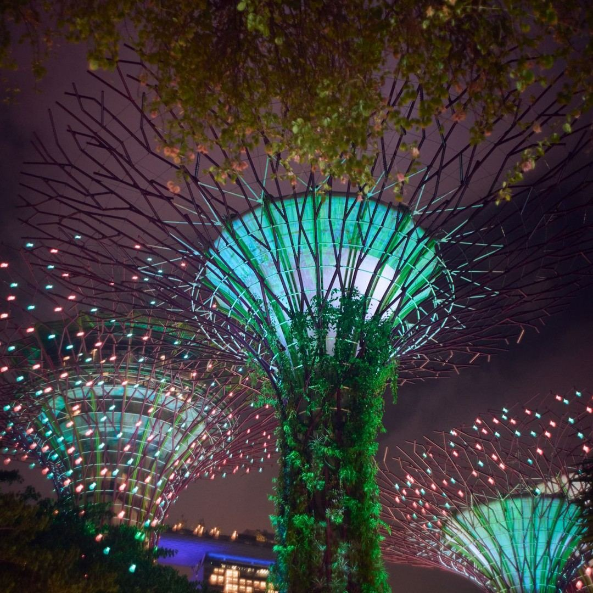
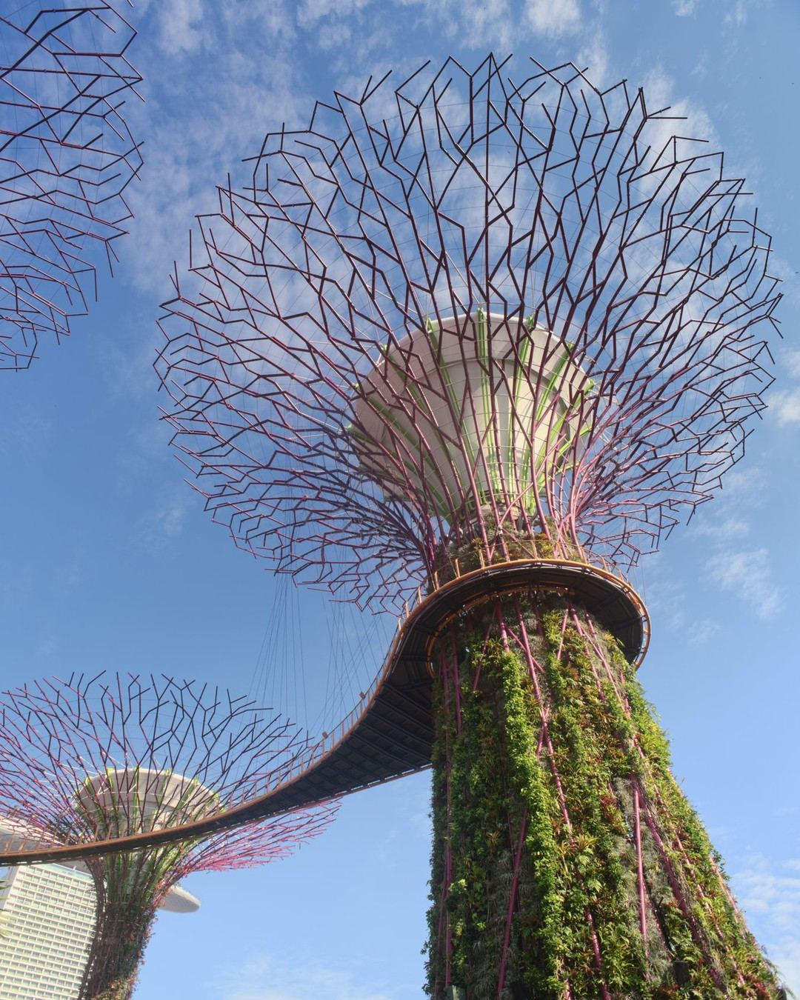
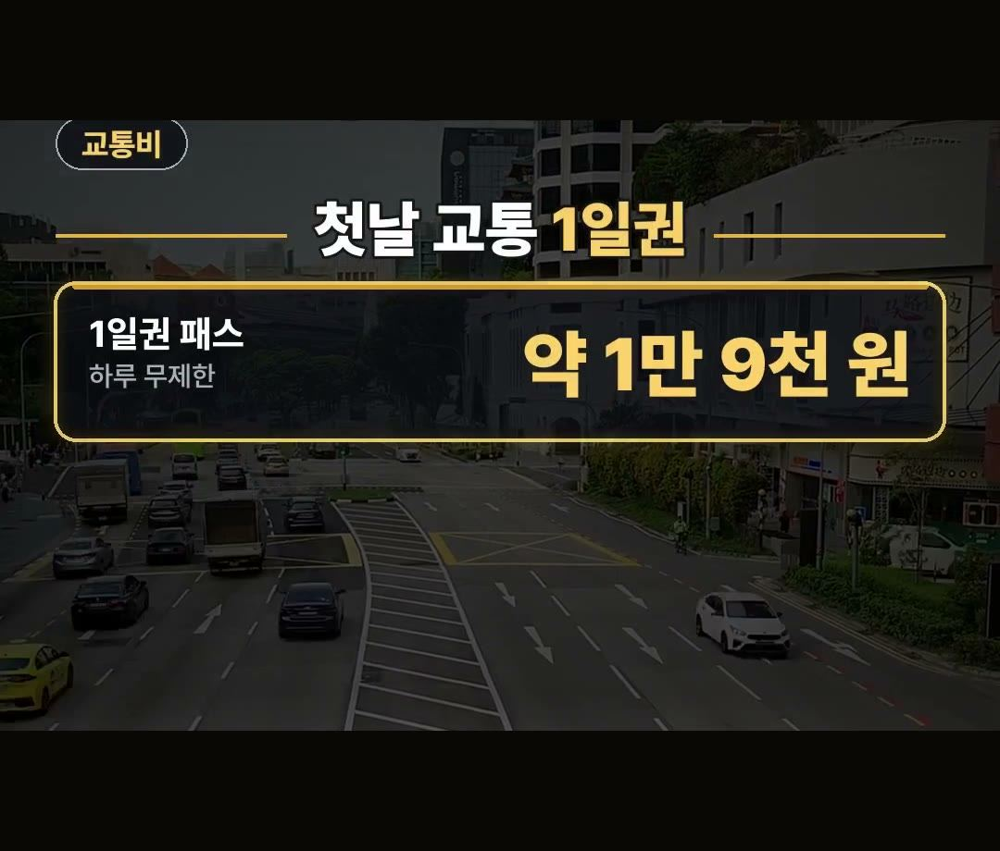
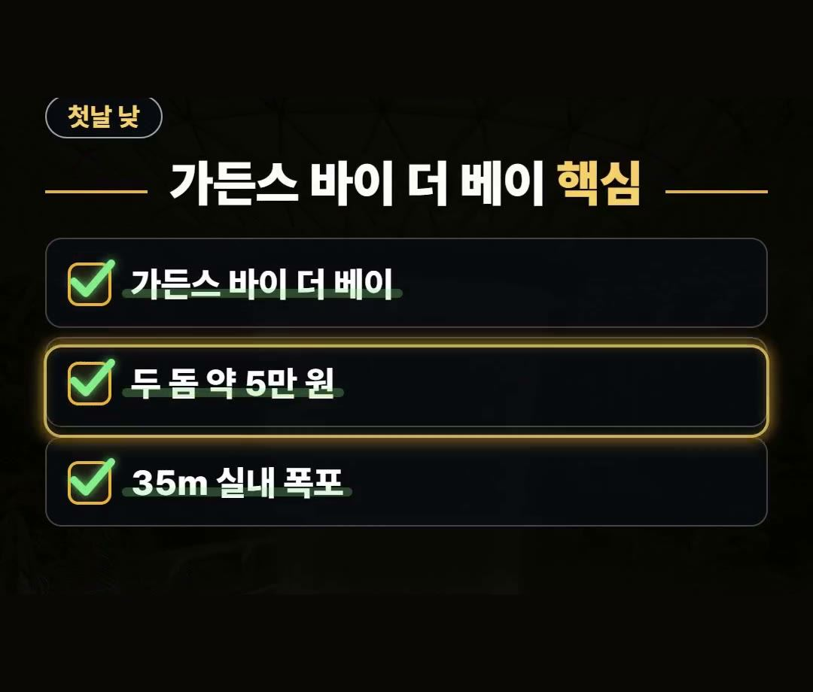
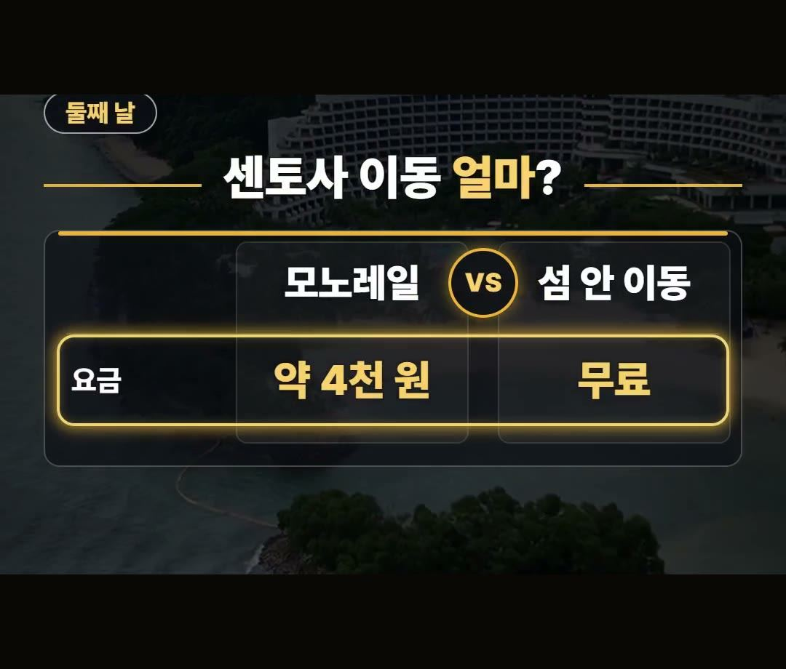
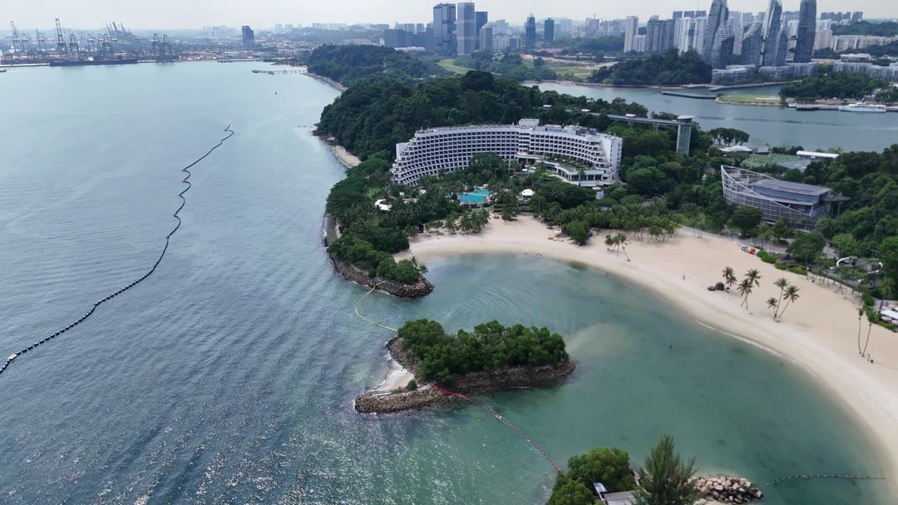
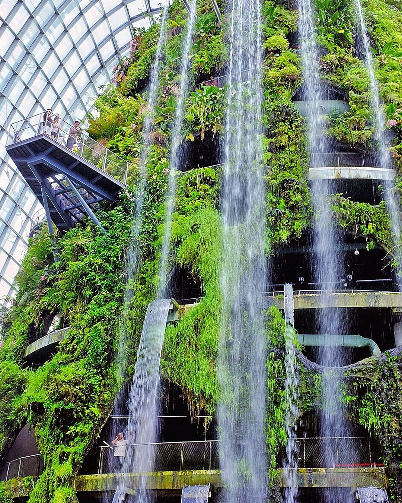
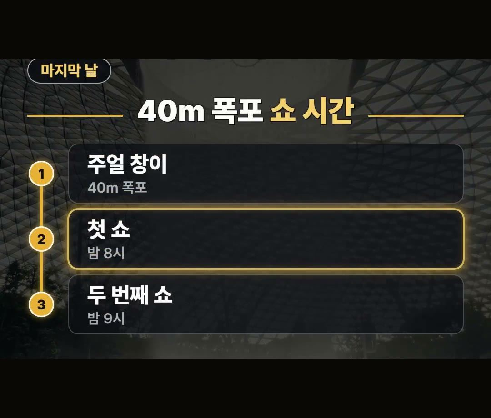

싱가포르 여행 일정, 마지막 날 공항이 하이라이트인 이유
※ 이 글에는 제휴 링크가 포함되어 있으며, 링크를 통해 예약·구매하시면 일정 수수료를 받을 수 있습니다. (가격은 같습니다)
※ 이 포스팅은 쿠팡 파트너스 활동의 일환으로, 이에 따른 일정액의 수수료를 제공받습니다.
싱가포르 여행 일정은 딱 네 가지만 먼저 정해 두면 됩니다.
입국신고서를 내는 시점, 첫날 교통, 날짜별로 갈 곳(가든스 바이 더 베이와 센토사), 그리고 마지막 날 주얼 창이 폭포 쇼 시간이에요.
2026년 11월 기준으로 동선 그대로 정리했으니 위에서부터 순서대로 읽어 보세요.
안녕하세요, 돈 아끼는 연구소 아낌 소장이에요.
2026년 11월 기준으로 첫날 교통 1일권은 약 1만 9천 원이고, 마지막 날 주얼 창이 40m 폭포 쇼는 월요일부터 목요일 밤 8시와 9시라는 것만 정리해 봤어요.
이 두 가지는 꼭 기억하세요! ✈️

싱가포르 여행일정 짜는법, 하루에 하나씩 나누면 쉬워요

싱가포르 여행 일정을 짜다 보면 가고 싶은 곳을 한꺼번에 늘어놓기 쉬워요.
이 글은 날짜마다 중심이 되는 곳을 하나씩 정해 두는 방식으로 풀었습니다.
싱가포르 여행일정 짜는법이 막막하다면 아래 틀을 그대로 가져가셔도 좋아요.
- 도착 전: 입국신고서
- 첫날: 교통 1일권, 낮에는 가든스 바이 더 베이
- 둘째 날: 센토사
- 마지막 날: 주얼 창이 40m 폭포 쇼
이렇게 나눠 두면 날마다 무엇을 먼저 할지 고민하는 시간이 줄어듭니다.
출발 전에 볼 것, 입국신고서는 3일 안에
입국신고서는 입국 3일 안에만 냅니다.
일찍 내면 안 받아요.
항공권을 끊자마자 미리 내 두고 싶어지는 분도 있겠지만, 이 3일 조건을 먼저 떠올려 주세요.
여행 일정표 맨 윗줄에 '입국 3일 안'이라고 적어 두면 잊지 않고 챙기기 좋아요.
첫날은 교통 1일권과 가든스 바이 더 베이

첫날 교통은 1일권 패스로 시작하는 동선이에요.
- 1일권 패스: 약 1만 9천 원
- 하루 무제한
도착한 날부터 쓰는 패스이니, 첫날 움직일 곳을 미리 정해 두면 하루를 알차게 쓸 수 있어요.

첫날 낮에는 가든스 바이 더 베이를 넣었습니다.
- 두 돔: 약 5만 원
- 핵심: 35m 실내 폭포
두 돔 입장이 약 5만 원이라 이 일정에서는 비용이 큰 편에 속해요.
그만큼 35m 실내 폭포가 이날의 중심이라는 점만 기억해 두세요.
둘째 날 센토사, 이동은 얼마?

둘째 날은 센토사로 갑니다.
들어갈 때 쓰는 모노레일 요금과 섬 안에서의 이동 요금을 나란히 놓으면 이래요.
- 센토사 모노레일: 약 4천 원
- 섬 안 이동: 무료

모노레일은 약 4천 원이고, 섬 안에서 움직이는 것은 무료입니다.
그래서 둘째 날은 섬 안에서 어디를 갈지만 정해 두면 이동비를 따로 계산할 일이 적어요.
마지막 날, 주얼 창이 40m 폭포 쇼 시간

싱가포르 여행 일정의 마지막 날은 공항으로 가서 주얼 창이의 40m 폭포를 보는 것으로 마무리해요.
쇼 시간은 이렇습니다.
- 월요일부터 목요일
- 첫 쇼: 밤 8시
- 두 번째 쇼: 밤 9시

이 시간은 월요일부터 목요일 기준이에요.
그래서 마지막 날이 무슨 요일인지 먼저 확인해 두면 좋아요.
40m 폭포를 놓치고 싶지 않다면 일정표 마지막 줄에 '밤 8시, 9시'를 적어 두고 그 시간에 맞춰 움직여 보세요.
정리
- 입국신고서는 입국 3일 안에만 내요. 일찍 내면 받지 않습니다.
- 2026년 11월 기준 첫날 교통 1일권은 약 1만 9천 원(하루 무제한), 가든스 바이 더 베이 두 돔은 약 5만 원이에요. 센토사 모노레일은 약 4천 원이고 섬 안 이동은 무료입니다.
- 마지막 날 주얼 창이 40m 폭포 쇼는 월요일부터 목요일 밤 8시와 9시에 있어요.
예약 링크는 아래에 모아 두었어요.
지금 쓸 수 있는 여행사 할인
- 📶 해외 데이터는 이심으로 미리 준비하세요 (마이리얼트립 마이심)
- 🎟 클룩 싱가포르 어트랙션 5% 할인 코드 「YEARENDSGATT5」 (지정 상품 한정 · 일부 상품 제외 · 쿠폰 취소 시 재발행 불가 · 예산 소진 시 조기 종료 · 12월 31일까지)
※ 여행사 사정으로 조건이 바뀌거나 일찍 끝날 수 있어요. 예약 전에 여행사 화면에서 한 번 더 확인하세요. (2026-11-27 확인)
📘 무료 여행 가이드 전자책 모음 보기 (오사카 · 후쿠오카 · 타이베이 · 도쿄 · 나트랑 · 일본겨울) ›
📌 2026년 11월 기준 정보예요. 가격은 환율·시기에 따라 달라질 수 있어요.
· Gardens by the Bay 공식 (플라워 돔)
· 싱가포르 이민국(ICA) SG Arrival Card
사진·영상영상 화면: Pexels (Afham Hamsyari, David Pickup | Advertising & Marketing 🇬🇧, Nirjhar Basak, Richard L, Shruthi Pradeep, Towfiqu barbhuiya)
사진: Pexels (CK Seng)
사진: Pixabay (StockSnap)